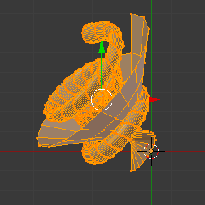
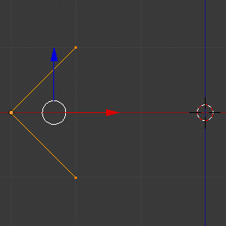
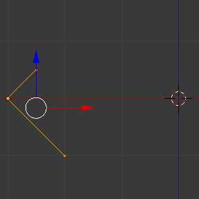

Screw Tool¶
Reference
| Mode: | Edit Mode |
|---|---|
| Panel: |
The Screw tool combines a repetitive Spin with a translation, to generate a screw-like, or spiral-shaped, object. Use this tool to create screws, springs, or shell-shaped structures (Sea shells, Wood Screw Tips, Special profiles, etc.).
The main difference between the Screw Tool and the Screw Modifier is that the Screw Tool can calculate the angular progressions using the basic profile angle automatically. It can also adjust the Axis angular vector without using a second modifier (for example, using the Screw Modifier with a Bevel Modifier, Curve Modifier, etc.), resulting in a much cleaner approach for vertex distribution and usage.
This tool works using open or closed profiles, as well as profiles closed with faces. You can use profiles like an open-edge part that is a part of a complete piece, as well as a closed circle or a half-cut sphere, which will also close the profile end.
You can see some examples of Meshes generated with the Screw tool in Fig. Wood Screw tip done with the Screw tool. and Fig. Spring done with the Screw tool..

Wood Screw tip done with the Screw tool. |

Spring done with the Screw tool. |
Usage¶
This tool works only with Meshes. In Edit Mode, the button for the Screw tool operation is located in the Mesh Tools Panel, . To use this tool, you need to create at least one open profile or line to be used as a vector for the height, angular vector and to give Blender a direction.
The Screw tool uses two points given by the open line to create an initial vector to calculate the height and basic angle of the translation vector that is added to the “Spin” for each full rotation (see examples below). If the vector is created with only two vertices at the same XYZ location (which will not give Blender a vector value for height), this will create a normal “Spin”.
Having at least one vector line, you can add other closed support profiles that will follow this vector during the extrusions (see Limitations). The direction of the extrusions is calculated by two determinant factors, the point of view in Global Space and the position of the cursor in the 3D View using Global coordinates. The profile and the vector must be fully selected in Edit Mode before you click the Screw button (see Limitations). When you have the vector for the open profile and the other closed profiles selected, click the Screw button.
Limitations¶
There are strict conditions about the profile selection when you want to use this tool.
You must have at least one open line or open profile,
giving Blender the starting Vector for extrusion,
angular vector and height (e.g. a simple edge, a half circle, etc.).
You need only to ensure that at least one reference line has two “free” ends.
If two open Lines are given, Blender will not determine which of them is the vector,
and will then show you an error message,
"You have to select a string of connected vertices too".
You need to select all of the profile vertices that will participate in the Screw
Tool operation; if they are not properly selected,
Blender will also show you the same message.
Note that the open line is always extruded, so if you only use it to “guide” the screw, you will have to delete it after the tool completion (use linked-selection, Ctrl-L, to select the whole extrusion of the open line).
If there is any problem with the selection or profiles,
the tool will warn you with the error message:
"You have to select a string of connected vertices too" as seen
in Fig. Screw Error message in the header of the Info editor. and Fig. Error message when clicking in the Screw Tool with an incorrect or bad selection.,
both in the Status Bar
and at the place where you clicked to start performing the operation
(when you click the Screw Button).

Screw Error message in the header of the Info editor.

Error message when clicking in the Screw Tool with an incorrect or bad selection.
You may have as many profiles as you like (like circles, squares, and so on) – Note that, not all vertices in a profile need to be in the same plane, even if this is the most common case. You may also have other, more complex, selected closed islands, but they have to be closed profiles because Blender will seek for only one open profile for the translation, height and angular vector. Some closed meshes that overlap themselves may not screw correctly (for example: Half UV Sphere works fine, but more than half could cause the Screw Tool to have wrong behavior or errors), and profiles that are closed with faces (like a cone or half sphere) will be closed automatically at their ends, like if you were extruding a region.
Tip
Simple Way to not Result in Error
Only one open Profile, all of the others can be closed, avoid volumes and some profiles closed with faces…
Options¶
This tool is an interactive and modal tool, and only works in Edit Mode.
Once you click in the Screw tool in the Mesh Tools Panel, Blender will enter in the Screw interactive mode, and the Adjust Last Operation Panel at the end of the Mesh Tools Panel will be replaced so you can adjust the values explained below. To show the Mesh Tools Panel, use the shortcut T in the Edit Mode of the 3D Viewport.
Once you perform any other operation, Blender leaves the interactive mode and accepts all of the values. Because it is modal, you cannot return to the interactive mode after completing/leaving the operation or changing from Edit Mode to Object Mode. If you want to restart the operation from its beginning, you can press Ctrl-Z at any time in Edit Mode.
The basic location of the cursor at the point of view (using Global coordinates) will determine around which axis the selection is extruded and spun at first (see Fig. Sidebar region ‣ Cursor.). Blender will copy the cursor location coordinates to the values present in the Center values of the Screw interactive Panel. Depending on the Global View position, Blender will automatically add a value of 1 to one of the Axis Vectors, giving the profiles a starting direction for the Screw Operation and also giving a direction for the extrusions. (See examples below.)
The position of the 3D cursor will be the starting center of the rotation. Subsequent operations (e.g. pressing the Screw button again), will start from the last selected element. Continuous operations without changing the selection will repeat the operation continuously from the last point.
.

Screw Tools Adjust Last Operation Panel (Edit Mode).
- Center
- These number fields specify the center of the spin. When the tool is called for the first time, it will copy the XYZ location (Global Coordinates) of the cursor presently in the 3D View to start the operation. You can specify the cursor coordinates using the Transform Panel in 3D View, using shortcut T to toggle the Panel, and typing in the 3D Cursor Location coordinates. You can adjust these coordinates interactively and specify another place for the spin center during the interactive session. (See Fig. Screw Tools ui-undo-redo-adjust-last-operation Panel (Edit Mode)..)
- Steps
- This number field specifies how many extrusion(s) will be done for each 360 degree turn. The steps are evenly distributed by dividing 360 degree by the number of steps given. The minimum value is 3; the maximum is 256 (See Fig. Screw Tools ui-undo-redo-adjust-last-operation Panel (Edit Mode).).
- Turns
- This number field specifies how many turns will be executed. Blender will add a new full 360 degree turn for each incremental number specified here. The minimum value is 1; the maximum is 256. (See Fig. Screw Tools ui-undo-redo-adjust-last-operation Panel (Edit Mode)..)
- Axis
- These three number fields vary from (-1.0 to 1.0) and are clamped above those limits. These values correspond to angular vectors from (-90 to 90) degrees. Depending on the position where you started your cursor location and Object operation in the viewport and its axis positions in Global View space and coordinates, Blender will give the proper Axis vector a value of 1, giving the angular vector of the profile a starting direction and giving the extrusions a starting direction based on the current view. Blender will let you adjust the axis angular vectors and you can tweak your object such that you can revert the direction of the screw operation (by reverting the angular vector of the height), meaning you can revert the clockwise and counterclockwise direction of some operations, and also adjust the angular vectors of the profile, bending it accordingly. (See Fig. Screw Tools ui-undo-redo-adjust-last-operation Panel (Edit Mode)..)
Examples¶
The Spring Example¶

Circle placed at X (-3, 0, 0).
- Open Blender and delete the default Cube.
- Change from perspective to orthographic view using shortcut Numpad5.
- Change the view from User Orthographic to Front Orthographic, using the shortcut Numpad1. You will see the X (red) and Z (blue) coordinate lines.
- In case you have moved the cursor by clicking anywhere in the screen, again place the cursor at the Center, using the shortcut Shift-S choosing Cursor to Center or the Transform Panel, placing the cursor at (0, 0, 0) typing directly into the Cursor 3D Location.
- Add a circle using shortcut Shift-A .
- Rotate this circle using the shortcut R X 9 0 and Return.
- Apply the Rotation using Ctrl-A and choosing Rotation.
- Move this circle three units on the X axis to the left;
you can use the shortcut Ctrl while selecting with the mouse using the standard transform widgets
(clicking on the red arrow shown with the object and moving while using shortcut Ctrl
until the info in the bottom left corner of the 3D Viewport displays
D. -3.0000 (3.0000) Global), or press the shortcut G X Minus 3 and Return. You can use the Transform Panel, and type Minus 3 and Return in the Location too. (See the Fig. Circle placed at X (-3, 0, 0)..) - You will have to scale the circle using the shortcut S Period 5, then Return.
- Now enter Edit Mode using shortcut Tab.
- De-select all vertices using the shortcut A.
The following steps explain how to create a height vector:

Profile and vector created.
- Press Ctrl and left-click LMB near the circle, in more or less at the light gray line of the square above the circle, and, while still pressing Ctrl, left-click LMB again in the gray line below the circle. You have created two vertices and an Edge, which Blender will use as the first height and angle vector.
- Now, in the Transform Panel, in the median, clicking in the Global coordinates, for the XYZ coordinates, put (-2, 0, -1).
- RMB click on the other vertex, and again, set its XYZ coordinates to (-2, 0, 1). This will create a straight vertical line with 2 units of Height.
- De-select and select everything again with the shortcut A. (See Fig. Profile and vector created..)
- Again, place the cursor at the center. (Repeat step 2.)
- At this point, you can save this blend-file to recycle the Spring for another exercise; LMB click on File, located in the header of the Info editor, (at the top left side), and choose Save as. You can name it e.g. “screw spring example.blend”.
- Click Screw and adjust the Steps and Turns as you like and you have a nice spring, but now here comes the interesting part!
Clockwise and Counterclockwise using the Spring Example¶
Still in the interactive session of the Screw Tool, you will see that the Z axis Value of the Screw Panel is set to 1.000. LMB click in the middle of the Value and set this value to -1.000. At first, the Spring was being constructed in a Counterclockwise direction, and you reverted the operation 180 degrees in the Z axis. This is because you have changed the angular vector of the height you have given to Blender to the opposite direction (remember, -90 to 90 = 180 degrees ?). See Fig. Spring direction..

Counterclockwise direction. |

Flipped to Clockwise direction. |
It is also important to note that this vector is related to the same height vector axis used for the extrusion and you have created a parallel line with the Z axis, so, the sensibility of this vector is in practical sense reactive only to negative and positive values because it is aligned with the extrusion axis. Blender will clamp the positive and negative to its maximum values to make the extrusion follow a direction, even if the profile starts reverted. The same rule applies to other Global axes when creating the Object for the Screw Tool; this means if you create your Object using the Top View (Shortcut Numpad7) with a straight parallel line following another axis (for the Top View, the Y axis), the vector that gives the height for extrusion will also change abruptly from negative to positive and vice versa to give the extrusion a direction, and you will have to tweak the corresponding Axis accordingly to achieve the Clockwise and Counterclockwise effect.
Note
Vectors that are not Parallel with Blender Axis
The high sensibility for the vector does not apply to vectors that give the Screw Tool a starting angle (e.g. any non-parallel vector), meaning Blender will not need to clamp the values to stabilize a direction for the extrusion, as the inclination of the vector will be clear for Blender and you will have the full degree of freedom to change the vectors. This example is important because it only changes the direction of the profile without the tilt and/or bending effect, as there is only one direction for the extrusion, parallel to one of the Blender Axes.
Bending the Profiles using the Spring Example¶
Still using the spring example, you can change the remaining vector for the angles that are not related to the extrusion axis of the spring. Bending the spring with the remaining vectors and creating a profile that will also open and/or close because of the change in starting angular vector values. What really is changed is the starting angle of the profile prior to the extrusions. It means that Blender will connect each of the circles inclined with the vector you have given. The images below show two bent Meshes using the axis vectors and the spring example. See Fig. Bended mesh.. These two Meshes generated with the Screw tool were created using the Top Orthographic View.

The Axis will give the profile a starting vector angle. |

The vector angle is maintained along the extrusions. |
Creating Perfect Screw Spindles¶
Using the spring example, it is easy to create perfect screw spindles (like the ones present in normal screws that you can buy in hardware stores). Perfect screw spindles use a profile with the same height as its vector, and the beginning and ending vertex of the profile are placed at a straight parallel line with the axis of extrusion. The easiest way of achieving this effect is to create a simple profile where the beginning and ending vertices create a straight parallel line. Blender will not take into account any of the vertices present in the middle but those two to take its angular vector, so the spindles of the screw (which are defined by the turns value) will assembly perfectly with each other.
- Open Blender and click on File located in the header of the Info editor again, choose Open Recent and the file you saved for this exercise. All of the things will be placed exactly the way you saved before. Choose the last saved blend-file; in the last exercise, you gave it the name “screw spring example.blend”.
- Press the shortcut A to de-select all vertices.
- Press the shortcut B, and Blender will change the cursor; you are now in box selection mode.
- Open a box that selects all of the circle vertices except the two vertices you used to create the height of the extrusions in the last example.
- Use the shortcut X to delete them.
- Press the shortcut A to select the remaining vertices.
- Press the shortcut W, and select .
- Now, click with the RMB on the middle vertex.
- Move this vertex using the shortcut G X Minus 1 and Return. See Fig. Profile for a perfect screw spindle..
- At this point, you can save this blend-file to recycle the generated Screw for another exercise; click with LMB on File – it is in the header of the Info editor (at the top left side), and choose Save as. You can name it e.g. “screw hardware example.blend”.
- Press the shortcut A twice to de-select and select all vertices again.
- Now press Screw.
- Change Steps and Turns as you like. Fig. Generated mesh. shows you an example of the results.

Profile for a perfect screw spindle.
The starting and ending vertices are forming a parallel line with the Blender Axis.
|

Generated mesh.
You can use this technique to perform normal screw modeling.
|
Fig. Ramp. shows an example using a different profile, but maintaining the beginning and ending vertices at the same position. The generated mesh looks like a medieval ramp!

Profile with starting and ending vertices forming a parallel line with the Blender Axis. |

Generated mesh with the profile at the left. The visualization is inclined a bit. |
As you can see, the Screw spindles are perfectly assembled with each other, and they follow a straight line from top to bottom. You can also change the Clockwise and Counterclockwise direction using this example, to create right and left screw spindles. At this point, you can give the screw another dimension, changing the Center of the Spin Extrusion, making it more suitable to your needs or calculating a perfect screw and merging its vertices with a cylinder, modeling its head, etc.
A Screw Tip¶
As explained before, the Screw tool generates clean and simple meshes to deal with; they are light, well-connected and are created with very predictable results. This is due to the Blender calculations taking into account not only the height of the vector, but also its starting angle. It means that Blender will connect the vertices with each other in a way that they follow a continuous cycle along the extruded generated profile.
In this example, you will learn how to create a simple Screw Tip (like the ones used for wood; as shown in the example at the beginning of this page). To make this new example as short as possible, it will recycle the last example (again).
- Open Blender and click on File located in the header of the Info editor again; choose Open Recent and the file saved for this exercise. All of the things will be placed exactly the way you saved before. Choose the last saved blend-file; from the last exercise, which is named “screw hardware example.blend”.
- Move the upper vertex and move a bit to the left, but no more than you have moved the last vertex. (See Fig. Profile with a starting vector angle..)
- Press the shortcut A twice to de-select and select all.
- Press the shortcut Shift-S and select Cursor to Center
- Press Screw.

Profile with a starting vector angle. |

Generated mesh with the profile. |
As you can see in Fig. Generated mesh with the profile., Blender follows the basic angular vector of the profile, and the profile basic angle determines whether the extruded subsequent configured turns will open or close the resulting mesh following this angle. The vector of the extrusion angle is determined by the starting and ending Vertex of the profile.